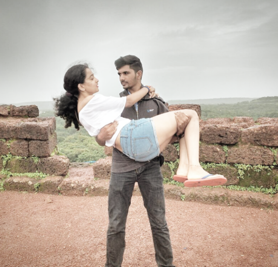

Nov 10, 2017
I know we were not in a relationship then, but i felt i was in one. I remember the look you had in your eyes,i remember the lipstick u wore,i remember the pullover u wore, i rememember how pretty you were..you were so perfect that night...that bike ride, the way we intertwined our fingers, our first hug.. i will never forget the weather,the road and peace that i felt when i knew that the moment i had been waiting for so long was finally here and it was exactly as i wanted it to be..it all seemed so perfect..i wanted to just stop the moment right there neither move forward nor backward because this was how i always wanted it to be..whenever i see this picture all i can remember is how perfect we are
I know a lot of bad things happened on that day but so did the good things...you know you are always pretty but on somedays i just want to keep looking at you, see you smile, see your chote dimples, see your eyes sparkle with joy.. this was one of those days. you looked so perfect..i wish i could just pack u up and take u home and never let you go..you were this cute litte muffin of mine that i could just eat up...thanks to sudeep and sanjana we have some good pictures to post
i love thinking about those days when i could hug you randomly i could keep staring into your eyes...you cooked food for me that day and you fed me like a small child...Babe u know what i want..i want to hold you and never let you go, keep you forever and protect you from he world, take all the hits for you but in this process i never realized i many be the one that is harming you.. i am sorry dumb for everything i have done that has hurt you but i swear none of it was intentional.. all i still want is for you to be happy with me.. i am not perfect but i promise i will try to be your perfect
Rahul: Sunna
Kshitija: we are married to each other na
Rahul: Nahi we are married twice to each other
Kshtija: i knew it
i know people call us chessy..but when did becoming chessy become a bad thing..you will always remain my cute little dumbass wifey and i really really want to keep calling you that for the rest of my life..
Babe remember the chat where we and our daughter and aniket are in our house and there is small little bornfire lit up int the between and its cold and we have all worn a shawl kind of thing..sahil is playing with our daughter and we all are talking laughing and just being happy..i really hope this happens cause idk what else i am gonna with all that i will have if i dont have you all people to be with me..we both will make this dream come true and the day this dream come true we will be looking at each other and remebering how it all turned out to be so perfect and we will say to each other after all this time that "we made it"
This was literally the best day ever for me..we spent the whole day with each other..stayed with each otehr not because we had to because we wanted to..this was my best new years eve and i coudnt have asked anything more than what i got.. we did so many things that day right from reaching to the place to dancing to eating and being with each other, taking photos..you made me realize that day what life is all about, its spending time time with the people you love..and i wanna spend the rest of my life with you doin all the things we planned to do..will you be with me forever because there is no forever for me without you,,you are my future..you are my everything and i always it to stay that way

You know that day i said to you my hands are paining after picking u up..you know why because my world was in my hands and i didnt wanna risk dropping it..you are the best thing that has ever happened to me and now at this time i am not scared of picking u up because i know even though it might pain a bit but i am willing to bear this pain than not at all picking u up..you are mine forever and i am never letting you step down. umm all this was to get u emotional, the truth is u were heavy lol **, nah just kidding u were hot babe *wink* *wink*
Your know i always thought my eyes were extremely dark...but the truth it wasnt...see when you see the brightest star in the universe you feel all other stars are dark..the same thing happened with me..Babe you have one of the happiest and brightest eyes i have ever seen they are so fuckin expressive when you cry they cry with you..when you laugh they laugh with you..i can literally keep staring into your eyes for as long as i can imagine..cause you know why?. cause my whole world resides within you..i have been seeing the rest of the world for too long and foun everything except peace and calmness and love....now let me just savor all these emotions for a moment cause i have found the world i seeked for..